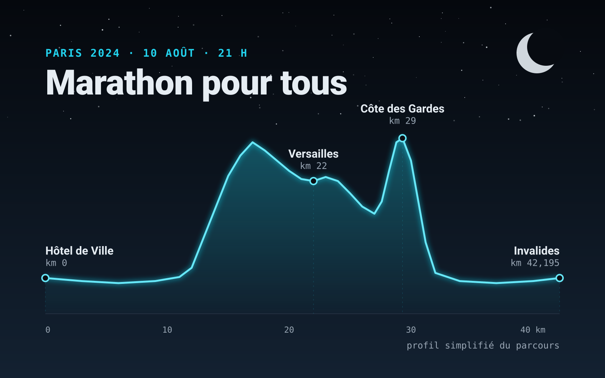

Marathon pour tous 2024 : 42 km de nuit sur le parcours olympique
Le 10 août 2024, j'ai couru de nuit le Marathon pour tous des Jeux de Paris, sur le parcours des athlètes olympiques. Récit, chiffres et photos.
Deux terrains de jeu : la route et le trail.
Sur route, des kilomètres et des objectifs chronométrés. Le récit de mes courses marquantes.

Le 10 août 2024, j'ai couru de nuit le Marathon pour tous des Jeux de Paris, sur le parcours des athlètes olympiques. Récit, chiffres et photos.
Du dénivelé, de la boue et des levers de soleil. Le trail, c'est là que je vide ma tête et que je recharge les batteries.